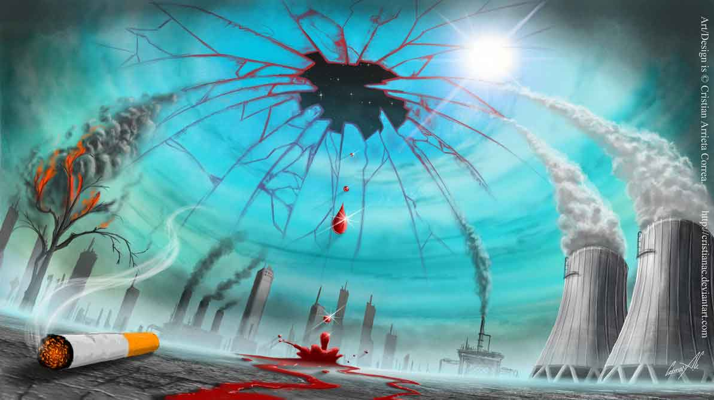
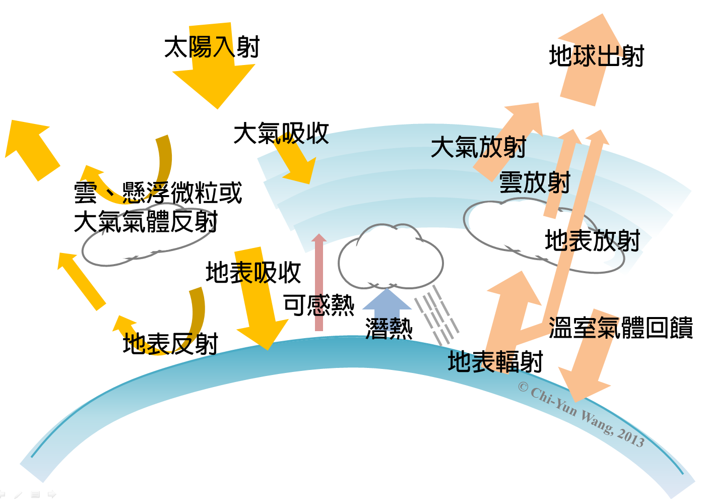
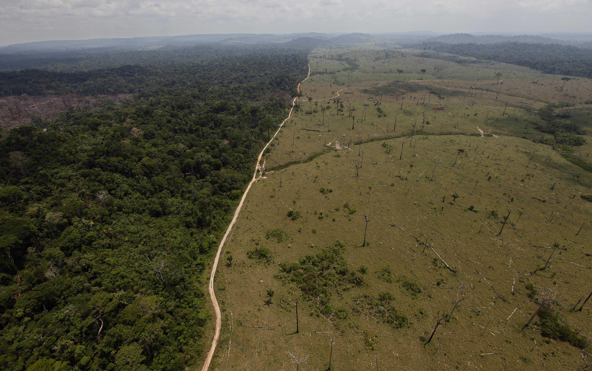
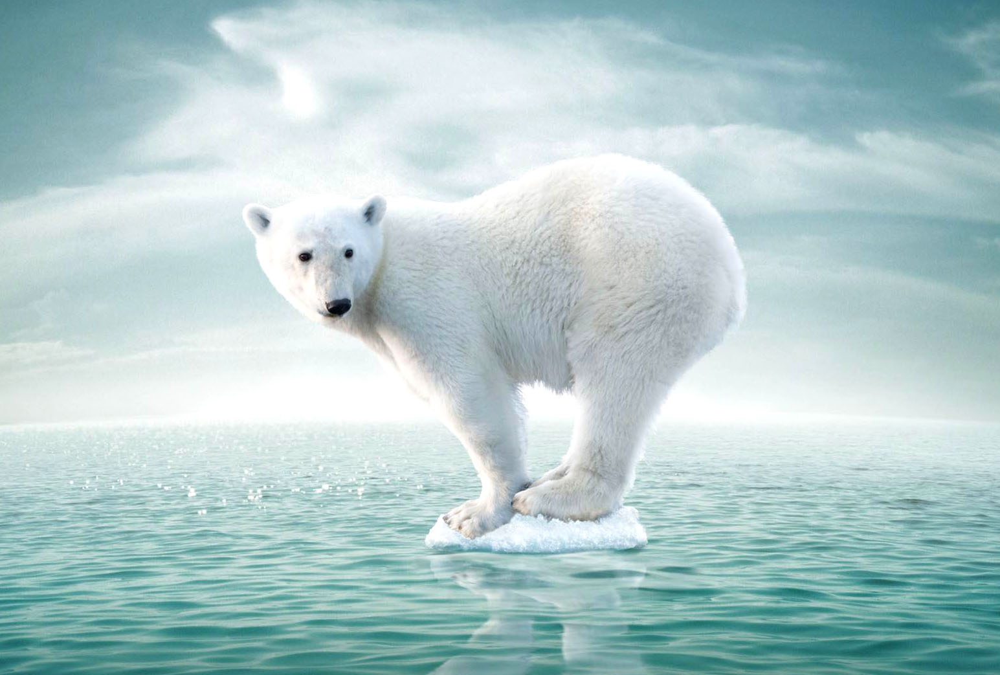
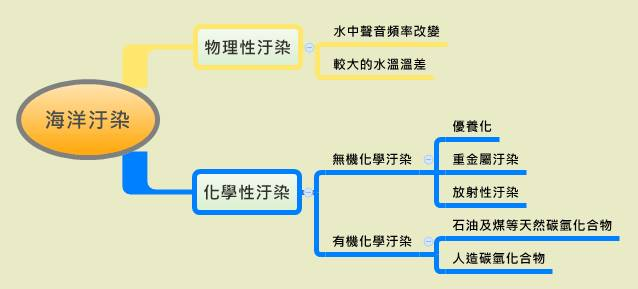

臭氧層破洞之影響
提高人類罹患皮膚癌和白內障機率、植物受損農作物減產、破壞生態系平衡、抑制免疫系統影響健康、造成光學煙霧現象的惡化引起氣候變動。


溫室效應之影響
造成溫室效應的氣體中，最主要的是二氧化碳，其次是氧化亞氮、甲烷和氟氯碳化物及臭氧，這些污染物主要是燃燒石化原料（例如：煤、石油）所產生的。
原本可藉由熱帶與林來吸收大量的二氧化碳，但是人類過渡砍伐雨林，卻破壞了森林利用二氧化碳的這到防禦工事，使溫室效應日漸嚴重。
溫室效應會使全球氣溫節節上升，其所造成的氣候改變，將使我們付出極大的代價。例如氣溫上升會使冰山融化、海面上升、陸地面積減少；若加上氣候帶位移，可能引發動物大遷徙、屆時也有可能促使腦炎、狂犬病、登革熱、黃熱病等疾病的蔓延。
熱帶雨林破壞的影響
熱帶雨林具有水土保持及防洪功效，如果遭破壞而減少，土地就會變得貧脊且復原不易。一旦下雨則會引爆洪患，並且使的燃料供應短缺；另外熱帶雨林減少也會使二氧化碳濃度增加，使地球溫室效應擴大。


土地沙漠化問題
使林地減少，木材取得不易，造成週邊居民生活上發生困難。另外如糧食生產不足等。
從長期的觀點來看，沙漠化導致的氣候變化及植物減少，將會增加二氧化碳的濃度，促使溫室效應加劇，使地球降雨量減少，產生旱災。
野生動植物瀕臨絕種
野生動植物和人類一樣，是經過長時間的演進而來，一旦絕種了，人類將無法使他們再度出現，因此必須保護。


海洋污染
使海生物減少。
